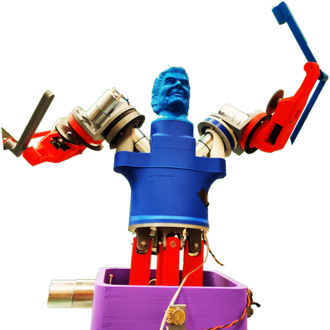
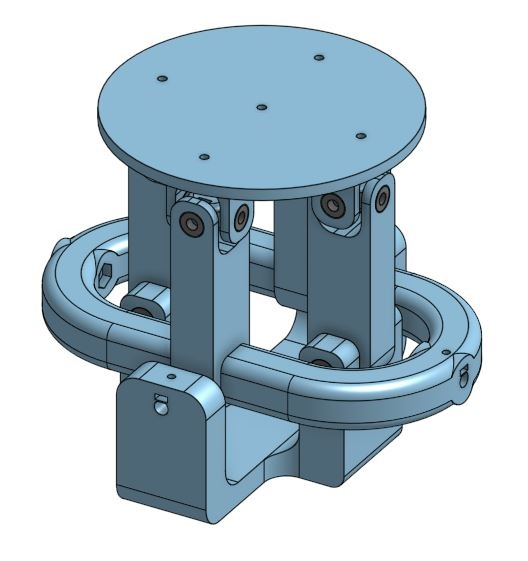
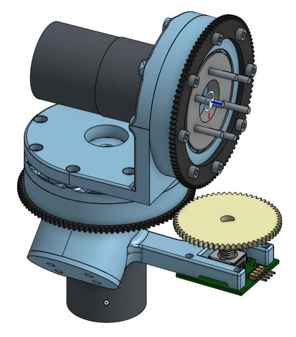

Shadow Boxing Robot
This Project was for my Principles of Engineering course. We had a bit over a month to put together a project that involved non trivial mechanical, software, and electrical components. My group took some inspiration from the movie Real Steel and decided we wanted to make a more advanced version of Rock'em Sock'em robots. We wanted both robots to be able to be controlled through mimicking the pose of a human controller as depicted one of the pivotal moments of the movie.
For this project I worked mainly on the CAD and fabrication of select mechanical aspects of the robot. All the final CAD was done in OnShape. I worked the most on the swashplate that acted as a hip joint allowing the robot to lean forwards/backwards and side to side. The pan and roll motors were each driven independently and the mechanisms were designed to not interfere with each other. This meant you could operate them both at the same time and have a wider range of motion.
(The CAD on the left is missing the motors and enclosure to show the actual mechanism)
I also worked on creating the 2 degree of freedom shoulder joint. For this, one of my teammates made a custom slew bearing to use as one of the main parts. This allowed us to cut down drastically on the overall cost of the project and it worked surprisingly well. The bottom of the shoulder mounted to the torso in a way that angled the bottom motor into hole in the torso for it to sit. From there we just designed the two different sections of the shoulder to attach to the two different portions of the slew bearing. The gears were added later to allow the encoders to be able to read any rotation.